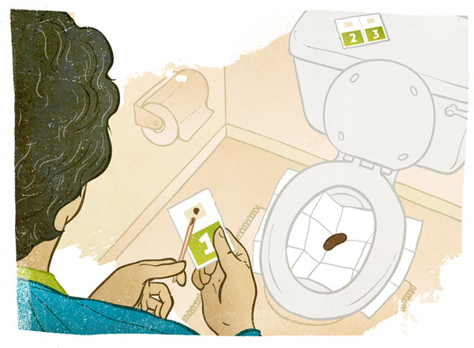

Annual stool testing works by finding colon cancer early, when it may be most treatable. It looks for invisible blood in the stool (poop), which can be a sign of cancer. Since blood can also come from hemorrhoids or other causes, you’ll need to follow up with a colonoscopy if you get a positive result. When repeated every year, the stool test is shown to save lives from colon cancer.
Getting the test kit:
Home stool test kits are generally handed out at the doctor’s office or community clinic. They're occasionally sent in the mail or available from drugstore clinics.
After you receive your kit, read the instructions carefully and call your doctor's office if you have questions. There are several types of kits. Depending on the one you use, you may have dietary and medication restrictions in the few days leading up to the collection of your sample. It’s important to follow the directions because certain foods and medications can confuse the test results.
Collecting the sample:

The kit shown in this picture includes a small stick or wand for collecting a small sample of stool and a card where you place your sample. It’s important to follow instructions about how and when to collect your samples in order to get the most accurate results possible. A single sample collected at the doctor’s office is not enough. Since blood isn't always present, some kits ask for more than one sample and should be collected at home.
Returning the sample:
You'll need to wrap your sample(s) and deliver it/them to your doctor or lab -- either in person or by dropping it in the mail. Be sure and put your name on the kit so you don’t have to do the test again. The sample kits aren’t messy or smelly and the postal service is used to handling them.
Results:
Traces of blood in the stool are detected in the stool of about 1 in 20 people. An indication of blood doesn’t necessarily mean you have cancer. It could be a false reading, bleeding hemhorroids, or something else. If blood is detected, you’ll need to have a colonoscopy to find out the cause and possibly treat it. If you do have cancer, finding it early is a good thing. Colon cancer is highly treatable when found early.
Follow-up:
It’s important to do the test every year so you'll know as soon as any problems develop. It’s important that everybody continue some sort of colon screening regularly between the ages of 50 and 75. Decide with your doctor or healthcare provider which screening plan works best for you and if you should continue screening past the age of 75.
back to the top of the page
 Screening
Screening
 Hands-On
Hands-On
 Inexpensive
Inexpensive